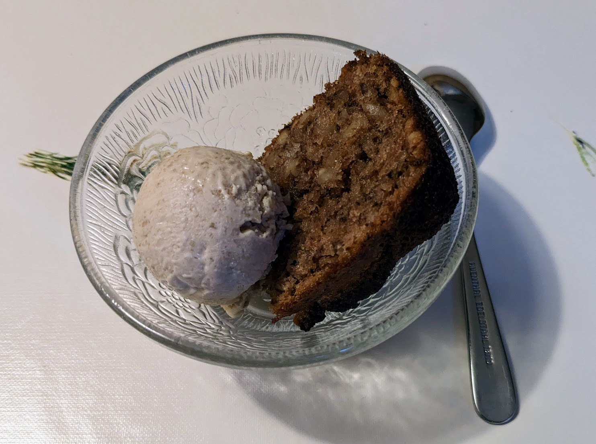

..@..♦.D.

|
Présentation 
|
Blog
|
Recettes
|

Ici avec une part de gâteau de noix
Pour un peu moins d'un litre et demie de glace :
Remarque : sur la photo, j'ai accompagné la glace d'un gâteau de noix, mais en fait c'est pas une bonne idée, le goût très intense du gâteau ne rend pas justice à la glace. Mieux vaut déguster la glace seule, ou avec un autre gâteau moins fort, ou pourquoi pas avec un peu de sauce au chocolat.